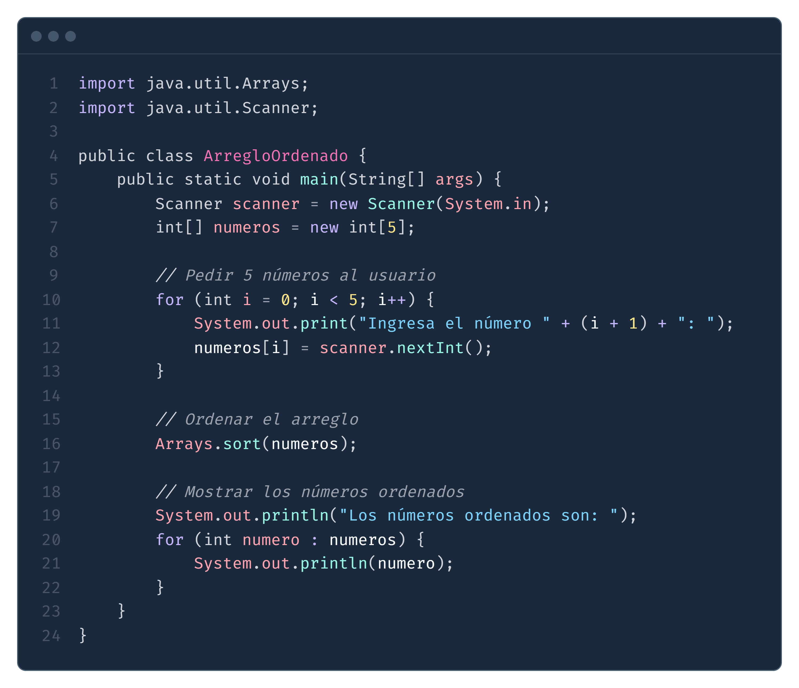

Aquí se muestran las soluciones de los 5 ejercicios para la práctica del lenguaje Java:
Escribe un programa que pida al usuario que ingrese 10 números enteros y los sume. Luego, muestra el resultado de la suma.
Instrucciones:
Utiliza un bucle for para ingresar los números.
Al final, muestra la suma de todos los números.
Escribe un programa que pida al usuario un número entero y determine si es un número primo. Un número primo es aquel que solo es divisible por 1 y por sí mismo.
Instrucciones:
El programa debe verificar si el número ingresado es divisible por cualquier número entre 2 y la raíz cuadrada del número.
Si el número no es divisible por ninguno, es primo.
Escribe un programa que calcule el factorial de un número entero positivo. El factorial de un número
𝑛
n es el producto de todos los números enteros desde 1 hasta
𝑛
n.
Instrucciones:
El programa debe solicitar al usuario un número entero positivo.
Luego, calcular y mostrar el resultado del factorial usando un bucle for.
Escribe un programa que pida al usuario un número entero y luego imprima la tabla de multiplicar de ese número, desde 1 hasta 10.
Instrucciones:
Solicita un número entero al usuario.
Utiliza un bucle for para imprimir la tabla de multiplicar del número solicitado.
Escribe un programa que pida al usuario ingresar 5 números y los almacene en un arreglo. Luego, muestra los números ordenados de menor a mayor. Instrucciones: Usa un arreglo para almacenar los 5 números. Utiliza el método Arrays.sort() de la clase Arrays para ordenar el arreglo.
